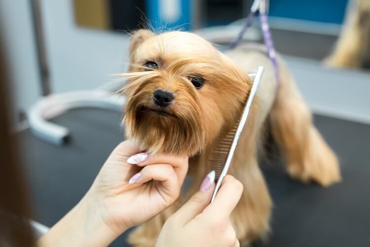
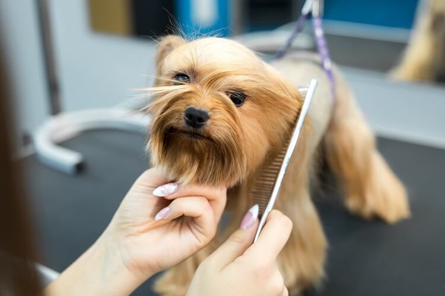
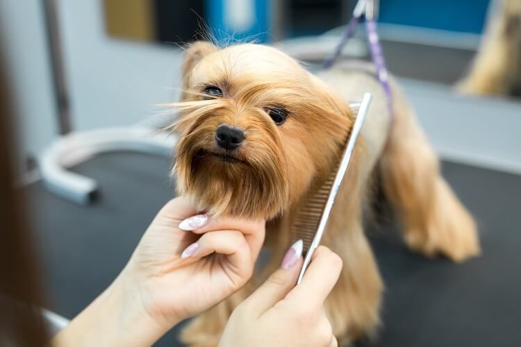
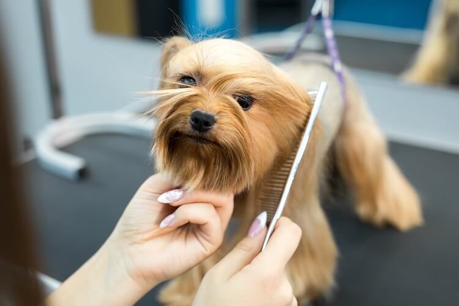

Ela consiste em cortar os pelos das patas, dando maior segurança para o cão andar e evitando que fungos ou outros parasitas se acumulem no local, da barriga para que eles não embaracem, da região anal e genital, evitando que eles se sujem com as necessidades do pet.